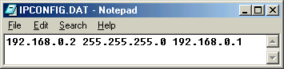
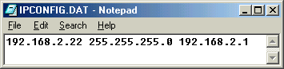

Normalmente não é necessário modificar nenhum dos ficheiros de configuração para que o SMS funcione. Se estiver apenas a usar o SMS de forma simples, pode saltar esta secção. Só necessita de alterar a configuração do SMS se quiser que este funcione em rede.
Se tiver um adaptador de rede oficial da Sony™, e pretender usar o SMS para vizualizar ficheiros através da rede, terá de atribuir um endereço de IP e subnet à PS2. Provavelmente quererá isto num modo semi-permanente, esta secção ajudá-lo-á a escolher opções compatíveis com a seua rede doméstica.
Configuração de IP para o SMS está guardado em mc0:/SYS-CONF/IPCONFIG.DAT. (não CONFIG.DAT). Repare que os dois ficheiros estão separados. O SMS não procurará por definições em mc0:/BxDATA-SYSTEM/CONFIG.DAT.
Para atribuir um endereço de IP à PS2, terá de criar um ficheiro chamado IPCONFIG.DAT (e.g. usando o notepad) e deverá ter apenas uma linha de texto:
<ps2_ip_address> <ps2_subnet_mask> <ps2_default_gateway>
Se crou um ficheiro CONFIG.DAT na secção Capítulo 2, Instalação pode usar o mesmo ficheiro, mas lembre-se de o renomear para IPCONFIG.DAT. Assim the tiver criado este ficheiro, tem de copiá-lo para a sua PS2, para a localização mc0:/SYS-CONF/IPCONFIG.DAT. Pode fazer isto utilizando a técnica de FTP referida na secção instalação.
Terá de escolher um endereço de IP que seja diferente de todos os outros endereços de IP dos PC's na seua rede local, mas com a mesma subnet que o seu PC. Terá de desligar a opção DHCP no seu PC, e usar uma configuração de IP manual (ou estático).
|
Definições da PS2 |
Endereço de IP da PS2: | 192.168.a.x |
|
'Subnet Mask' da PS2: | 255.255.255.0 | |
|
'Gateway' da PS2: | 192.168.a.z | |
|
Definições do PC |
Endereço de IP do PC: | 192.168.a.y |
|
'Subnet Mask' do PC: | 255.255.255.0 | |
|
'Gateway' do PC: | 192.168.a.z |
Esta configuração é para um PC e PS2 ligados directamente com um cabo cruzado, ou ambos ligados a um 'switcher'. Não existe nenhum 'gateway' de internet ao qual se ligar, por isso o 'gateway' é o IP do PC.
|
Definições da PS2 |
Endereço de IP da PS2: | 192.168.0.2 |
|
'Subnet Mask' da PS2: | 255.255.255.0 | |
|
'Gateway' da PS2: | 192.168.0.1 | |
|
mc0:/SYS-CONF/IPCONFIG.DAT |

| |
|
Definições do PC |
Endereço de IP do PC: | 192.168.0.1 |
|
'Subnet Mask' do PC: | 255.255.255.0 | |
|
'Gateway' do PC: | 192.168.0.1 |
Aqui está a configuração que uso em casa. PC e PS2 estão na mesma 'subnet' 192.168.2.___, e o meu router/access point são 192.168.2.1.
|
Definições da PS2 |
Endereço de IP da PS2: | 192.168.2.22 |
|
'Subnet Mask' da PS2: | 255.255.255.0 | |
|
'Gateway' da PS2: | 192.168.2.1 | |
|
mc0:/SYS-CONF/IPCONFIG.DAT |

| |
|
Definições do PC |
Endereço de IP do PC: | 192.168.2.23 |
|
'Subnet Mask' do PC: | 255.255.255.0 | |
|
'Gateway' do PC: | 192.168.2.1 |
Se estiver ligado a internet pela mesma rede que usa para se ligar à
PS2 tenha muito cuidado quando
alterar a configuração de rede do seu PC. Verifique que o seu PC se
encontra na mesma 'subnet' que o seu router/access point (i.e. os
primeiros três números do IP do seu PC têm de ser os mesmos do IP do
router), e de que o 'Gateway' permanece o mesmo (isto será normalmente
o endereço de IP do router. Não fazer isto pode resultar numa perda de
ligação à internet. Se não tiver a certeza do que está a fazer, por
favor tome nota das suas definições iniciais escrevendo
ipconfig /all no command prompt.
A configuração geral do SMS está guardada em mc0:/SMS/SMS.cfg. Este ficheiro é criado pela aplicação quando você salva as suas definições, e não está feito para ser editado à mão. Não precisa de criar este ficheiro. O SMS cria-lo-á quando salvar as definições no SMS (veja o menu de configuração na secção Utilização).
Se tiver problemas com as definições, é aconselhável que apague o seu ficheiro mc0:/SMS/SMS.cfg , e deixe o SMS criar um novo da próxima vez que for executado.